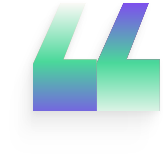

The visibility gap in identity security
With [Presenter Name],[Title]
Title of the
course here
Submodule title here
With [Presenter Name],[Title]
1Topic 2Topic 3Topic 4Topic 5Topic 6Topic 7
Section or module name
Three things to remember
First point in a few words
One supporting line, kept short and concrete.
Second point in a few words
One supporting line, kept short and concrete.
Third point in a few words
One supporting line, kept short and concrete.
Access Reviews
Why Group Review Certifications Matter
How SSO Groups Work
- Teams use groups (e.g., “Sales”) to manage app access
- Apps like Salesforce and Zendesk are tied to these groups
- New hires automatically gain access when added to the group

“Most organizations lack visibility into the tools their teams use, and you can’t govern what you can’t see.”